| SOURCE | TITLE| IMAGE MATCH | click to source page |
| Don't Know if this is rare or not Just wanted to make sure | 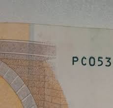 | |
| norphil.co.uk | Norvic Philatelics Blog: May 2015 | 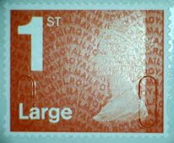 |
| Invaluable.com | Sold at Auction: [1970S] CILDO MEIRELES, ZERO CRUZEIRO. TWO ORIGINAL SIGNED BANKNOTE-WORKS, 1978 | 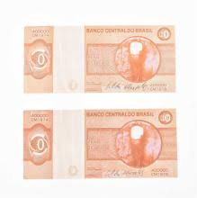 |
| Correio Braziliense | Aprenda a identificar se o dinheiro é verdadeiro ou falso | 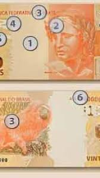 |
| Elemintal | Liberator Simón Bolivar & Red Siskin Finches 20,000 Bolívares Venezuel – elemintalshop | 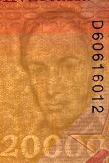 |
| University of San Diego | Zero Cruzeiro – Works – eMuseum | 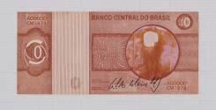 |
| Bosnien-Herzegowina : r/Banknotes | 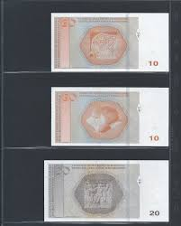 | |
| Numista | 50 Euros (Europa Series) - Eurozone – Numista | 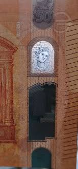 |
| qz.com | Neuroscientists helped design Europe's new €50 so that anyone can spot a fake | 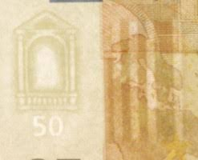 |
| coinscatalog.NET | Full list of Italy coins | coinscatalog.NET | 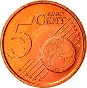 |
| YouTube | Pasaban Machines - YouTube | 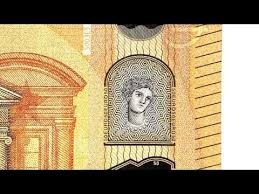 |
| reginajeffers.blog | Not Worth the Paper It's Written On… | Every Woman Dreams... | 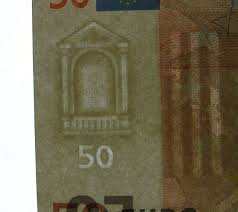 |
| How hard is to break 100 euro bills? | 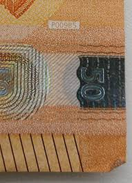 | |
| College Art Association | CAA News | College Art Association » Blog Archive » New in caa.reviews | CAA | 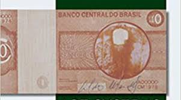 |
| The Irish Independent | Bank wants us to spend €35m in small change | Irish Independent | 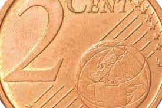 |
| iStock | Old Greek Drachma Currency Stock Photo - Download Image Now - 2015, Banking, Coin - iStock | 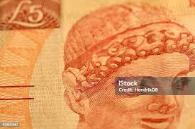 |
| Weird banknote from Nigeria : r/Banknotes | 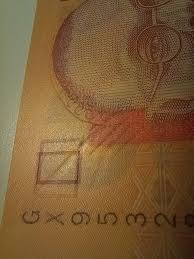 | |
| eBay | 23X 10 Rubles 1991 Bank Notes Russia Soviet Uncirculated Unc | eBay | 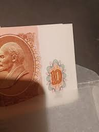 |
| iStock | Brazilian Money Stock Photo - Download Image Now - Brazil, Brazilian Currency, Close-up - iStock | 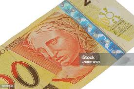 |
| France 🇫🇷 coin 5 euro cent 1999 with mint errors | 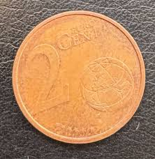 | |
| Numista | 5 Art - Kingdom of L'Anse-Saint-Jean (Quebec) - Canada – Numista | 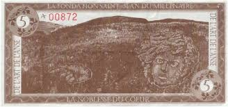 |
| Numista | 50 Lira - Turkey – Numista | 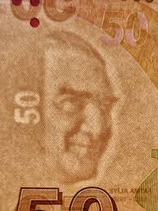 |
| European Central Bank LD TEST banknote - More info in comments : r/papermoney | 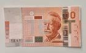 | |
| Tavex | Bosnian Mark - Tavex | 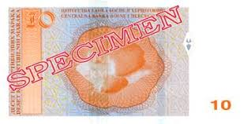 |
| Dreamstime.com | 425 Old European Currencies Stock Photos - Free & Royalty-Free Stock Photos from Dreamstime | 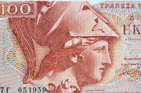 |
| Collect GB Stamps | GB Folded Decimal Booklets for 1987 : Collect GB Stamps |  |
| Banknote World | Austria 5 Euro Cents Coin, 2002-2005, KM #3084, XF-Extremely Fine, Primula Auricula, Globe | 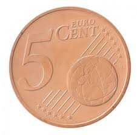 |
| Blombo | Buy Zero cruzeiro by Cildo Meireles, | 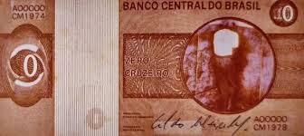 |
| VCoins | Slovenia, 2 Euro Cent, 2009, , Copper Plated Steel, KM:69 | European Coins | 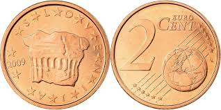 |
| coinsworld.eu | Euro Banknotes Designs: Serie 9 | 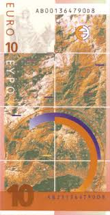 |
| Elemintal | Harpy Eagle & Cacique Guaicaipuro 2000 Bolivares Venezuela Authentic B – elemintalshop | 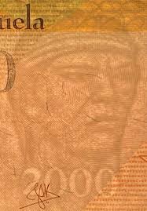 |
| PicClick AU | LOT OF MALTA Euro Coins 2004 - 2018 Mostly Unc 50 20 10 5 2 1 Euro Cent $29.00 - PicClick AU | 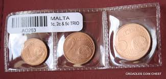 |
| lastdodo.com | Eurozone 50 Euro P-H-Du (2002) - Eurozone - 2002 'Signature W.F. Duisenberg' Issue - LastDodo | 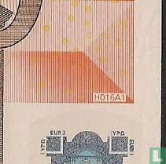 |
| lastdodo.com | Syria 5000 Pounds (2021) - Central Bank of Syria - 2009-2021 Issue - LastDodo | 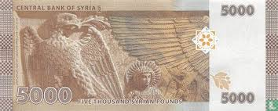 |
| MutualArt | Cildo Meireles | Cildo Meireles, Zero Cruzeiro. Two original signed banknote-works, 1978 (1978) | MutualArt | 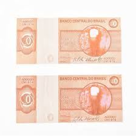 |
| Alamy | 50 euro note hologram euro hi-res stock photography and images - Alamy | 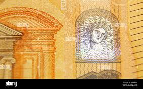 |
| iStock | Euro Symbol On Red Background Stock Photo - Download Image Now - Auction, Business, Business Finance and Industry - iStock | 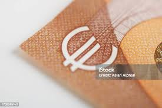 |
| RealBanknotes | RealBanknotes.com > Azerbaijan p26: 5 Manat from 2005 | 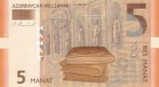 |
| Numista | 5 Dollars (Bearer Cheque) - Zimbabwe (1980-date) – Numista | 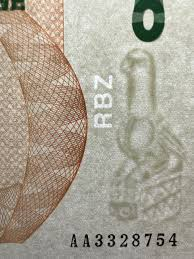 |
| Shutterstock | Brazilian Fifty Real Banknote Brown Note Stock Photo 1472863826 | Shutterstock | 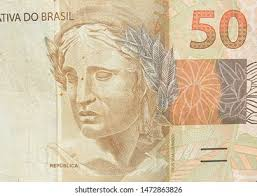 |
| eBay | PORTUGAL 2456 - Introduction of the Euro (pb82062) | eBay | 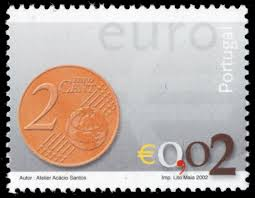 |
| eBay | Deutschland Germany 50 x 1 Cent 2002 "D" Unopened Bank Roll UNC - KM# 207 | eBay | 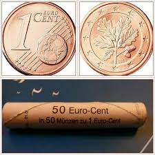 |
| MutualArt | Cildo Meireles | 2 Works: Zero Dollar, Árvore do Dinheiro (1978 - 1984) | MutualArt | 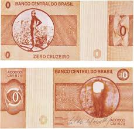 |
| Alamy | Socialist bill, Communist money, old Bulgarian money Stock Photo - Alamy | 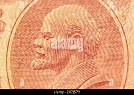 |
| Stamp Community Forum | Need Help With Scott # 210 Or # 211B.. - Stamp Community Forum | 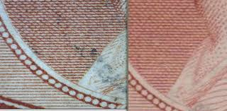 |
| eBay | SIERRA LEONE 2022 20th ANNIVERSARY OF THE EURO CURRENCY S/SHEET MINT NH | eBay | 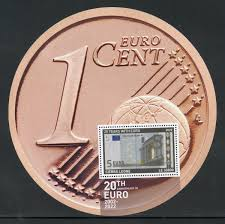 |
| VCoins | France, 5 Euro Cent, 2008, Paris, , Copper Plated Steel, Gadoury:3 | 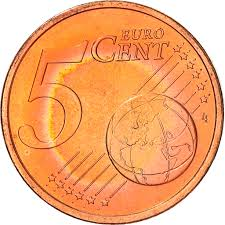 |
| TikTok | Ninguém pede🥺 . . . #drawing #art | TikTok | 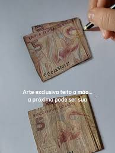 |
| Numista | 10 Reais (2nd. Family) - Brazil – Numista | 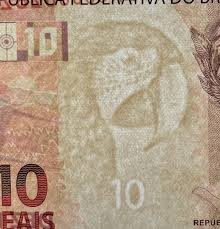 |
| Alamy | Watermark paper hi-res stock photography and images - Alamy | 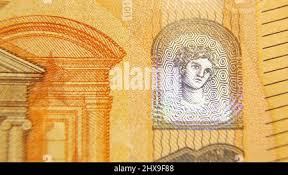 |
| Blogger.com | My Currency Collection: Bolivian Currency 20 Bolivianos banknote 2018 | 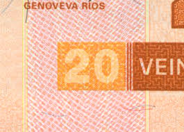 |
| iStock | 5 Euro Cent Coin Stock Photo - Download Image Now - Business, Close-up, Coin - iStock | |
| eBay | 2002 5 CENTS EURO COIN GERMANY, POLISHED PLATER , RARE..FOR COLLECTOR | eBay | |
| Shutterstock | 9+ Hundred Temerities Royalty-Free Images, Stock Photos & Pictures | Shutterstock | |
| Paul Fraser Collectibles | Postage Stamp News – Tagged "1880" | |
| Numista | 60 Tālā (Independence) - Samoa – Numista | |
| BANK NOTE MUSEUM | P-26 | |
| Joels Coins | THE NEW CURRENCY OF BOSNIA-HERZEGOVINIA | |
| europa.eu | Council of the European Union - PRADO - CZE-AO-04002 | |
| eBay | Georgia 5 Lary 1995 Specimen | eBay |